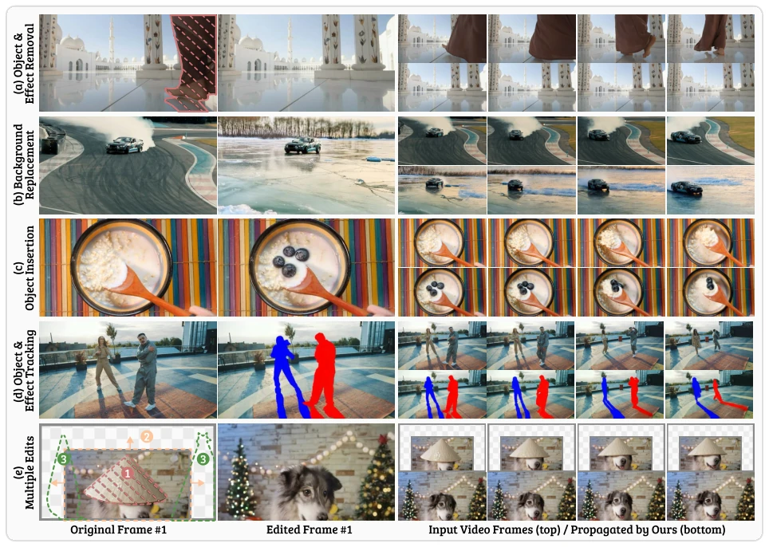
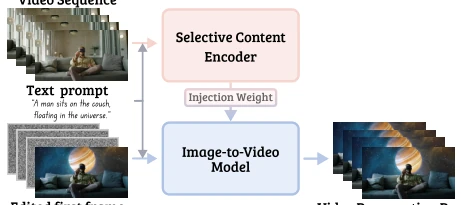
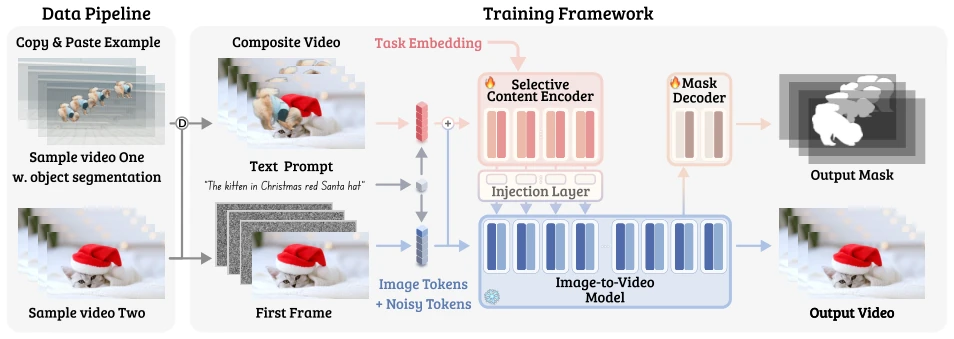
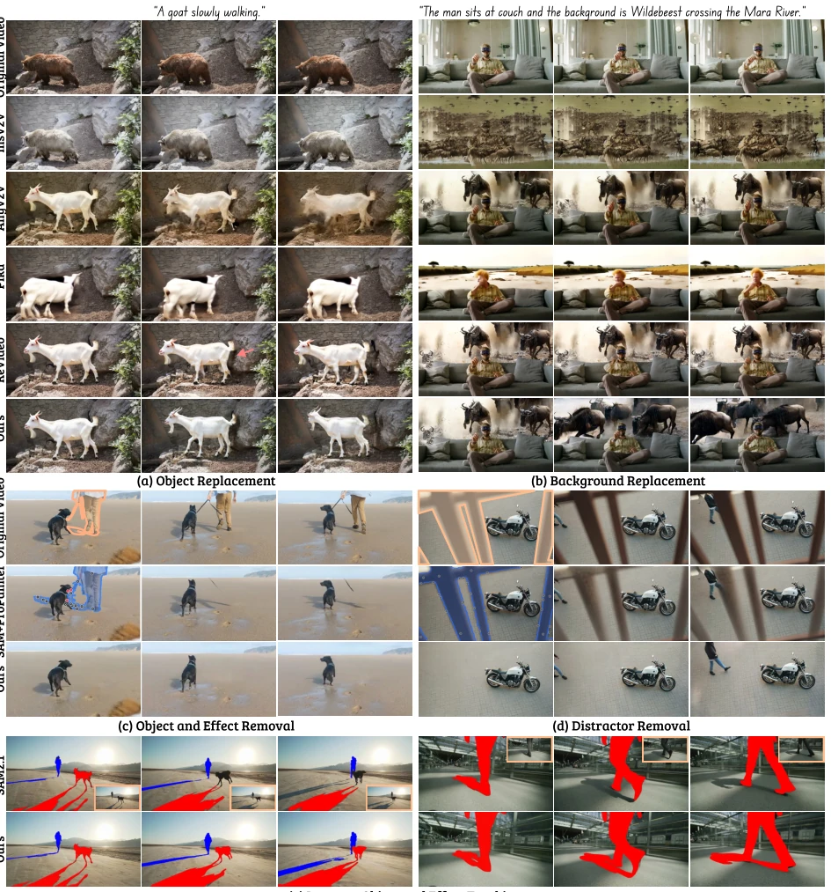
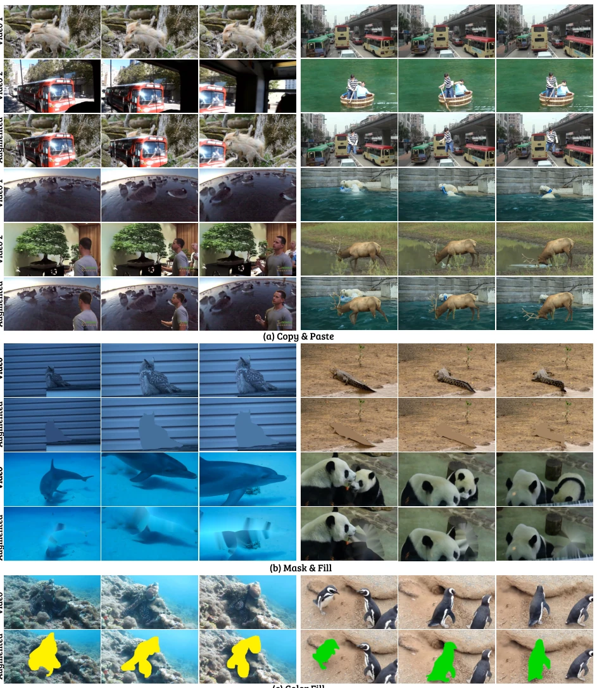
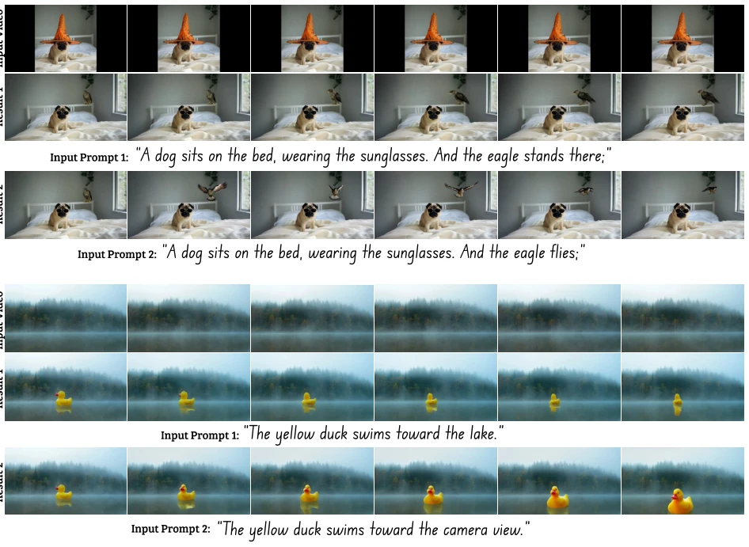
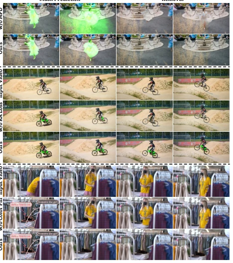
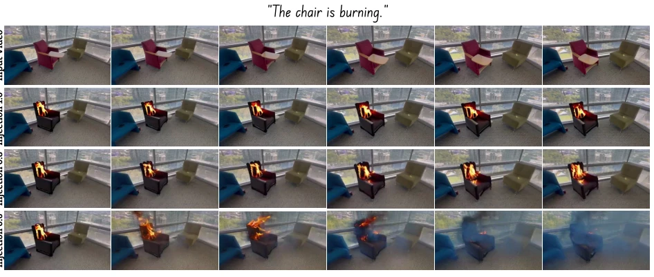
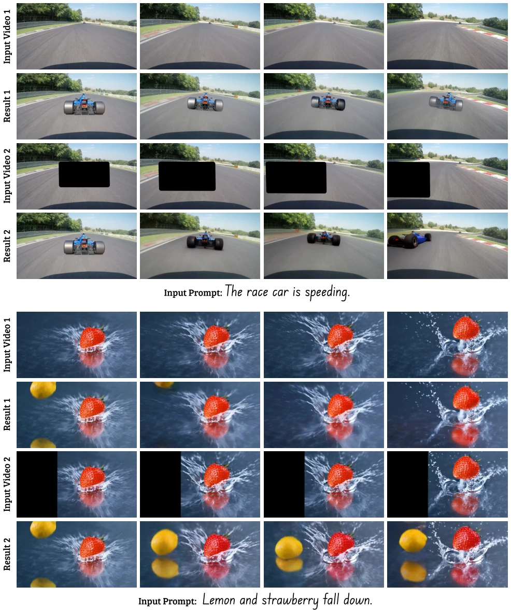
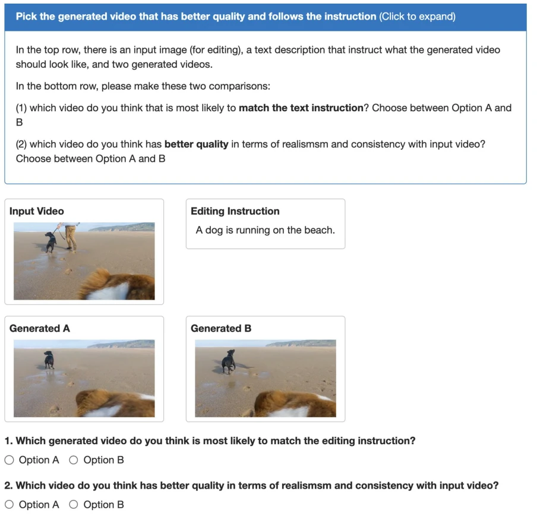

这篇 GenProp 试图用 I2V 模型统一视频编辑，不用光流不用深度，听起来很性感。但本质上还是靠生成模型“脑补”后续帧，对于复杂物理交互可能还是玄学。作为 Embodied AI 的辅助工具，它能生成带物理合理性的视频（比如蓝莓掉落），这对仿真数据生成有潜在价值，但离真实机器人控制还远。缺点嘛，推理速度肯定慢，毕竟要跑扩散模型，而且对首帧编辑依赖太强，首帧错了全片崩。不过它确实解决了多任务统一的问题，不用像以前那样为每个任务训练一个模型，算是给视频编辑领域省了点算力。
This GenProp attempts to unify video editing using an I2V model, without optical flow or depth, which sounds very appealing. But essentially it still relies on the generative model to 'imagine' subsequent frames, and for complex physical interactions it might still be metaphysics. As an auxiliary tool for Embodied AI, it can generate videos with physical rationality (e.g., blueberry falling), which has potential value for simulation data generation, but is still far from real robot control. As for drawbacks, inference speed is definitely slow, after all it needs to run diffusion models, and it relies too strongly on the first frame editing, if the first frame is wrong the whole video collapses. However, it indeed solves the problem of multi-task unification, not needing to train a model for each task like before, counting as saving some computing power for the video editing field.
Existing video editing methods mostly have single tasks, either specialized for removal [8] or specialized for insertion [30]. Traditional propagation methods rely on optical flow or depth [9, 32], and are prone to accumulating errors. Diffusion methods such as Pika [2] or InsV2V [8] often can only change appearance, not significantly change shape. GenProp proposes generative video propagation, unifying handling of removal, insertion, replacement, etc., tasks, without needing per-frame mask annotation, simplifying the process. It utilizes the generation capability of I2V, avoiding the problem of retraining required by traditional methods, achieving a more general editing framework.

Figure 1. GenProp. We propose a generative video propagation framework (GenProp), which can seamlessly propagate any first frame edit through the video. GenProp supports a wide range of video applications, including (a) complete object removal with effects such as shadows and reflections, (b) background replacement with realistic effects, (c) object insertion where inserted objects have physically plausible motion (i.e., blueberries falling while spoon goes up), (d) tracking of objects and their associated effects, and (e) multiple edits (outpainting, insertion, removal) at a single inference run.
The framework core is Selective Content Encoder (SCE) and Image-to-Video (I2V) model. SCE copies the initial N blocks of the generation model, extracts original video features, fuses with I2V features through injection layers, retaining information of unmodified regions. I2V model receives the edited first frame, responsible for generating subsequent frames. Training stage introduces Mask Prediction Decoder (MPD), using final blocks to predict modified region mask, assisting SCE decoupling. Region-Aware Loss (RA Loss) is key, containing non-mask region loss, mask region loss and gradient loss, preventing SCE from encoding modified region content. In terms of data, using synthetic data generation scheme, including Copy-and-Paste simulating insertion, Mask-and-Fill simulating editing, Color Fill simulating tracking, guiding model to adapt to different tasks through task embedding. During inference, no additional motion prediction is needed, directly propagating first frame editing.

Figure 2. Model Overview. During inference, our framework takes in the original video as input through a selective content encoder (SCE) to retain content in unchanged regions. Changes applied to the first frame are propagated throughout the video using an I2V model while other regions remain intact.

Figure 4. Training Framework of GenProp. Our framework integrates a Selective Content Encoder and a Mask Prediction Decoder on top of the I2V generation model, enforcing the model to propagate the edited region while preserving the content in the original video for all other regions. With synthetic data augmentations and task embeddings, our model is trained to propagate various changes in the first frame.

Figure 6. Visual Comparison in Multiple Video Tasks. GenProp demonstrates versatile editing capabilities, (a) allowing seamless modification of objects into those with vastly different shapes with independent motion and (b) enabling background edits. For object removal, GenProp excels at (c) effectively removing object effects together with the object and (d) realistically reconstructing large occluded areas. It is further able to perform instance tracking of objects and their effects when solid color fills are given as the first frame (see (e)).
Experiments are conducted on Classic and Challenging test sets. Comparison baselines include InsV2V [8], Pika [2], ReVideo [30], AnyV2V [26]. Evaluation metrics include PSNRm (consistency), CLIP-T (text alignment), CLIP-I (inter-frame consistency) and user study. Results show GenProp is significantly superior to other methods on the challenge set, especially in large-scale shape modification and background replacement tasks. User preference shows GenProp leads in alignment and quality. Ablation studies show, removing MPD leads to mask prediction degradation, removing RA Loss leads to original object reappearance. In object removal tasks, GenProp can remove shadows and reflections without dense mask annotation, superior to Propainter [64]. In tracking tasks, GenProp can track objects and their associated effects, while SAM2 [38] struggles with shadows.

Figure 8. Synthetic Data Generation. We use different ways to generate our training data by simulating a task: (a) Copy-and-Paste for object removal; (b) Mask-and-Fill for editing and insertion; (c) Color Fill for both tracking and editing enhancement.

Figure 9. Text Control Analysis. Text prompts can be used to control the result in a desired way.
其他图片Other Figures

Figure 7. Visual comparison of model variants, showing the effect of MPD (top), RA loss (middle) and Color Fill (bottom).

Figure 10. Injection Weight Analysis. The injection weight serves as a way to control the trade-off between reconstruction ability and generation ability. With a lower injection weight, edits with significant changes can appear in the original video as shown in the last row.

Figure 11. Motion Control with Black Regions. Adding back regions to the input video can help to control the motion of the element we want to edit in the video. For example, we can simulate overtaking of a racecar (top) or make the lemon fall to the left of the strawberry (bottom).

Figure 12. User Study Interface. Screenshot of a user study screen where two questions are asked to the user for assessing (1) alignment to the text and (2) overall video quality.